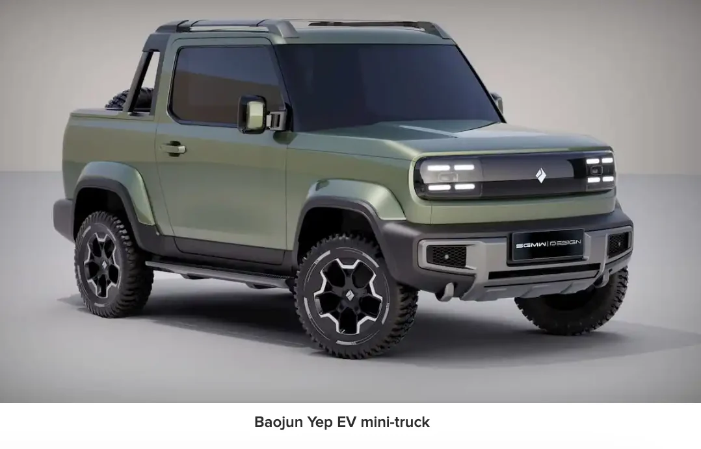
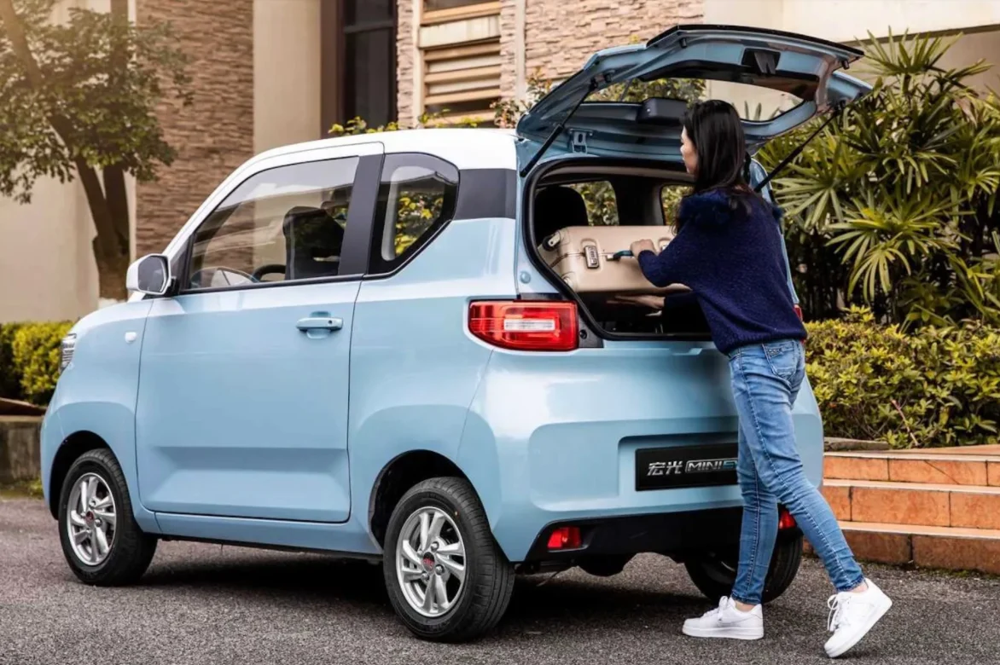

SGMW has sold 1.9 million Wuling Minis, ranking as the fourth best-selling electric vehicle globally last year. Available in both a four-door and convertible model, it's popular with seniors, new drivers, and as a practical second family car. In Canada, this Neighbourhood EV would cost around $10,000 and run for approximately 3 cents per kilometre. The Baojun Mini Truck also comes from SGMW. However, without a provincially-sponsored Neighbourhood Zero Emission Vehicle (NZEV) Pilot Program, this popular budget-friendly auto segment will remain inaccessible to Canadian drivers.
To address this, I'm submitting an application to the BC government for a NZEV Pilot covering Vancouver Island and the Gulf Islands. This pilot will introduce these vehicles as registered, insured, and compliant Low Speed Vehicles.
British Columbia has never conducted a NZEV Pilot before — a website is under construction.
Cheers, Dave Haberman

